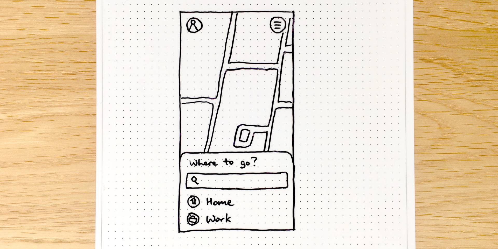
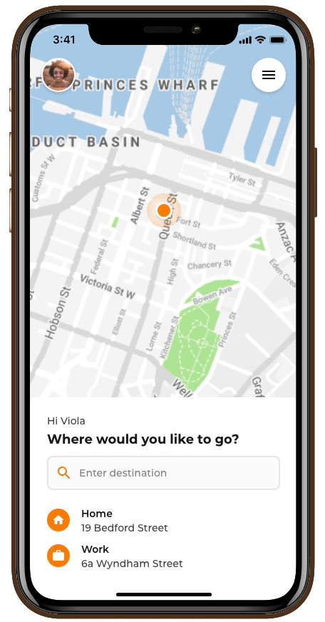

Role
UX, UI, Prototyping
Category
Web
Timeframe
2018
Role
UX, UI, Prototyping
Timeframe
2018
In an effort to further develop my prototyping skills, I participated in the daily challenges set by the Adobe team on Behance in September and November 2018. I had been using Adobe XD as a UI Design and Prototyping tool for more than a year but wanted to use these challenges as a structured way to learn some of the new features of the tool that had just been released. Also, an excellent community has developed on Slack around these challenges which has been a great opportunity to connect with people, share designs for feedback and inspiration, and give and receive advice.
During these two sets of challenges, I designed and prototyped 18 solutions over the course of 18 days. Some of these included an e-commerce product review experience, a photo editing app, and a event page with a booking interaction.
For this case study I will focus on the process and outcome of designing and prototyping the experience of requesting a taxi/ride-share in a mobile app.
These challenges were designed to be completed in just a few hours so the deliverables were dependent on the requirements. For this challenge, the brief was to design and prototype a mobile app to order a taxi, display the location of the car in real-time, and rate your driver.
I started by exploring and reviewing some similar apps for inspiration, such as Uber, Lyft, Google Maps, and Apple Maps. Most apps, including transportation apps, follow a similar design pattern of placing a search bar near the top and content below. However, I was intrigued by Lyft's and Apple's decision to place the search bar in the lower third of the screen.
Drawn wireframe concept for the homepage.
With the ever-increasing size of mobile phones, search bars near the top of the screen are becoming harder to reach. After doing some quick research about how users hold their phones and reviewing some mobile reachability guidelines, such as Fitt's Law, I decided to experiment with a simple layout designed for one-handed use, placing the important action areas in the lower third of the screen. I created an overlay sheet from the bottom that could change and grow depending on the information needed at the time.
I designed eight screens to create the user flow of this taxi/ride-sharing app concept. The flow goes through searching for and setting a destination, selecting the type of car, choosing a driver, rating the ride, and a summary of the trip. Each screen uses the same overlay sheet that changes depending on the context.
Set destination as Home
Select driver
Wait for pickup
Review your trip
Once the screens were designed, I used triggers and transitions to create a working prototype of the app. This allowed me to show the flow through the app and prototype some animations for the interactions.
Over the course of several weeks of completing these challenges, I learnt a lot and improved my UX, UI, and prototyping abilities. It was great to be able to create concepts for a wide range of users, products, and devices. I also met many talented designers, gave and received useful advice and feedback, and helped others with some questions they had regarding using Adobe XD for UI design and prototyping.
One particular highlight was meeting a few younger designers that reached out to me for some feedback on their designs. I was very grateful to have the opportunity to provide them with some informal mentorship and advice during the beginning of their careers as designers.
View all my challenge submissions on my Behance profile here and here.